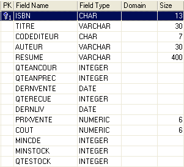
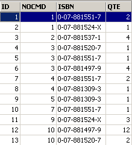
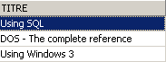
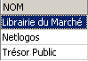

6. Aprofundamento da linguagem SQL
6.1. Introduction
Neste capítulo, apresentamos
- outras sintaxes do comando SELECT, que o tornam um comando de consulta muito poderoso, nomeadamente para consultar várias tabelas ao mesmo tempo.
- sintaxes alargadas de comandos já estudados
Para ilustrar os diversos comandos, trabalharemos com as seguintes tabelas utilizadas para a gestão de encomendas numa PME de distribuição de livros:
6.1.1. a tabela CLIENTS
Esta tabela armazena informações sobre os clientes do sistema PME:
 |

número que identifica o cliente de forma única — chave primária | |
nome do cliente | |
I = Particular, E = Empresa, A = Administração | |
nome próprio, no caso de um particular | |
Apelido da pessoa de contacto do cliente (no caso de uma empresa ou de uma administração) | |
Morada do cliente - rua | |
cidade | |
código postal | |
Telefone | |
Desde quando é cliente? | |
O (Sim) se o cliente tiver dívidas para com a empresa e N (Não) caso contrário. |
6.1.2. A tabela ARTICLES
Armazena informações sobre os produtos vendidos, neste caso, livros. A sua estrutura é a seguinte:

número que identifica um livro de forma única (ISBN = International Standard Book Number) — chave primária | |
Título do livro | |
Código que identifica uma editora de forma única | |
Nome do autor | |
Resumo do livro | |
Quantidade vendida no ano | |
Quantidade vendida no ano anterior | |
Data da última venda | |
Quantidade da última entrega | |
Data da última entrega | |
Preço de venda | |
Custo de aquisição | |
Quantidade mínima a encomendar | |
Nível mínimo de stock | |
Quantidade em stock |
O seu conteúdo poderá ser o seguinte:

6.1.3. a tabela COMMANDES
Esta tabela regista as informações sobre as encomendas feitas pelos clientes. A sua estrutura é a seguinte:

N.º que identifica um pedido de forma única — chave primária | |
N.º do cliente que efetuou esta encomenda - chave estrangeira - referência CLIENTS(ID) | |
Data de registo desta encomenda | |
O (Sim) se a encomenda tiver sido cancelada e N (Não) caso contrário. |

6.1.4. A tabela DETAILS
Contém os detalhes de uma encomenda, ou seja, as referências e quantidades dos livros encomendados. A sua estrutura é a seguinte:

N.º da encomenda — chave estrangeira que remete para a coluna NOCMD da tabela COMMANDES | |
N.º do livro encomendado - chave estrangeira que remete para a coluna ISBN da tabela LIVRES | |
Quantidade encomendada |
O seu conteúdo poderá ser o seguinte:

Acima, verifica-se que a encomenda n.º 3 (NOCMD) diz respeito a três livros. Isto significa que o cliente encomendou três livros ao mesmo tempo. As referências deste cliente podem ser encontradas na tabela [COMMANDES], onde se verifica que a encomenda n.º 3 foi efetuada pelo cliente n.º 5. A tabela [CLIENTS] indica-nos que o cliente n.º 5 é a empresa NetLogos, de Segré.
6.2. A encomenda SELECT
Propomos aqui aprofundar o nosso conhecimento sobre o pedido SELECT, apresentando novas sintaxes do mesmo.
6.2.1. Sintaxe de uma consulta multitabela
SELECT coluna1, coluna2, ... FROM tabela1, tabela2, ..., tabela p WHERE condition ORDER BY ... | |
A novidade aqui reside no facto de as colunas coluna1, coluna2, ... provirem de várias tabelas tabela1, tabela2, ... Se duas tabelas tiverem colunas com o mesmo nome, a ambiguidade é resolvida através da notação tablei.colonnej. O código condition pode referir-se às colunas de diferentes tabelas. |
Funcionamento
É criada a tabela cartesiana de table1, table2, ..., tablep. Se ni for o número de linhas de tablei, a tabela construída terá, portanto, n1*n2*...*np linhas, contendo o conjunto das colunas das diferentes tabelas. | |
A condition da WHERE é aplicada a esta tabela. É assim gerada uma nova tabela | |
Esta é ordenada de acordo com o modo indicado em ORDER. | |
São apresentadas as colunas solicitadas no SELECT. |
Exemplos
Utilizam-se as tabelas apresentadas anteriormente. Pretende-se conhecer os detalhes das encomendas efetuadas após 25 de setembro:
SQL>select details.nocmd,isbn,qte from commandes,details
where commandes.datecmd>'25-sep-91'
and details.nocmd=commandes.nocmd

Note-se que, a seguir a FROM, se coloca o nome de todas as tabelas cujas colunas são referenciadas. No exemplo anterior, as colunas selecionadas pertencem todas à tabela DETAILS. No entanto, a condição faz referência à tabela COMMANDES. Daí a necessidade de indicar esta última a seguir a FROM. A operação que verifica a igualdade entre colunas de duas tabelas diferentes é frequentemente designada por «junção igual».
A consulta SELECT poderia também ter sido escrita da seguinte forma:
SQL> select details.nocmd,isbn,qte from commandes
inner join details on details.nocmd=commandes.nocmd
where commandes.datecmd>'25-sep-91'
Vamos continuar com os nossos exemplos. Pretendemos obter o mesmo resultado que anteriormente, mas com o título do livro encomendado, em vez do seu n.º ISBN:
SQL>select commandes.nocmd, articles.titre, details.qte
from commandes,articles,details
where commandes.datecmd>'25-sep-91'
and details.nocmd=commandes.nocmd
and details.isbn=articles.isbn

O mesmo resultado é obtido com a seguinte consulta SQL, menos legível:
SQL> select details.nocmd,articles.titre,details.qte from details
inner join commandes on details.nocmd=commandes.nocmd
inner join articles on details.isbn=articles.isbn
where commandes.datecmd>'25-sep-91'
Acima, são realizadas duas junções internas com a tabela [DETAILS]:
- uma com a tabela [COMMANDES] para aceder à data de encomenda de um livro
- uma com a tabela [ARTICLES] para ter acesso ao título do livro encomendado
Além disso, queremos o nome do cliente que efetuou a encomenda:
SQL>select commandes.nocmd, articles.titre, qte ,clients.nom
from commandes,details,articles,clients
where commandes.datecmd>'25-sep-91'
and details.nocmd=commandes.nocmd
and details.isbn=articles.isbn
and commandes.idcli=clients.id

Além disso, queremos as datas das encomendas e que estas sejam apresentadas por ordem decrescente:
SQL>select commandes.nocmd, commandes.datecmd, articles.titre, qte ,clients.nom
from commandes,details,articles,clients
where commandes.datecmd>'25-sep-91'
and details.nocmd=commandes.nocmd
and details.isbn=articles.isbn
and commandes.idcli=clients.id
order by commandes.datecmd descending

Eis algumas regras a ter em conta nas junções:
- Após SELECT, colocam-se as colunas que se pretende apresentar no ecrã. Se a coluna existir em várias tabelas, deve ser precedida do nome da tabela.
- A seguir a FROM, colocam-se todas as tabelas que serão exploradas pelo SELECT, ou seja, as tabelas que contêm as colunas que se encontram a seguir a SELECT e WHERE.
6.2.2. A auto-junção
Queremos saber quais são os livros cujo preço de venda é superior ao do livro «Using SQL»:
SQL>select a.titre from articles a, articles b
where b.titre='Using SQL'
and a.prixvente>b.prixvente

As duas tabelas da junção são aqui idênticas: a tabela articles. Para as diferenciar, atribui-se-lhes um alias: from articles a, articles b. O alias da primeira tabela chama-se a e o da segunda, b. Esta sintaxe pode ser utilizada mesmo que as tabelas sejam diferentes. Ao utilizar um alias, este deve ser utilizado em toda a instrução SELECT, em vez da tabela a que se refere.
6.2.3. Juntura externa
Queremos saber quais os clientes que compraram algo em setembro, indicando a data da encomenda. Os restantes clientes são apresentados sem essa data:
SQL>select clients.nom,commandes.datecmd from clients
left outer join commandes on clients.id=commandes.idcli
where datecmd between '01-sep-91' and '30-sep-91'

Surpreende-nos aqui não obter o resultado correto. Deveríamos ter todos os clientes presentes na tabela [CLIENTS], o que não é o caso. Ao refletir sobre o funcionamento da junção externa, percebemos que os clientes que não compraram foram associados a uma linha vazia da tabela COMMANDES e, portanto, a uma data vazia (valor NULL na terminologia SQL). Esta data não cumpre, portanto, a condição definida para a data e o cliente correspondente não é apresentado. Vamos tentar outra coisa:
SQL>select clients.nom,commandes.datecmd from clients
left outer join commandes on clients.id=commandes.idcli
where (commandes.datecmd between '01-sep-91' and '30-sep-91')
or (commandes.datecmd is null)

Desta vez, obtemos a resposta correta à nossa pergunta.
6.2.4. Consultas aninhadas
SELECT coluna[s] FROM tabela[s] WHERE expressão operador consulta ORDER BY ... | |
requête é um comando SELECT que fornece um grupo de 0, 1 ou mais valores. Temos então uma condição WHERE do tipo expressão operador (val1, val2, ..., vali) expression e vali devem ser do mesmo tipo. Se a consulta devolver um único valor, volta-se a uma condição do tipo expressão operador valor que conhecemos bem. Se a consulta devolver uma lista de valores, poderemos utilizar os seguintes operadores:
expression IN (val1, val2, ..., vali): verdadeiro se expression tiver como valor um dos elementos da lista vali.
inverso de IN
deve ser precedido por =, !=, >, >=, <, <= expression >= ANY (val1, val2, .., valn): verdadeiro se expression for >= a um dos valores vali da lista
deve ser precedido por =, !=, >, >=, <, <= expression >= ALL (val1, val2, .., valn): verdadeiro se a expressão for >= a todos os valores válidos da lista
consulta: verdadeira se a requête devolver pelo menos uma linha. |
Exemplos
Retomamos a questão já resolvida por uma equijunção: apresentar os títulos com um preço de venda superior ao do livro «Using SQL».
SQL>select titre from ARTICLES
where prixvente > (select prixvente from ARTICLES where titre='Using SQL')

Esta solução parece mais intuitiva do que a da junção equi. Faz-se uma primeira filtragem com um SELECT e, em seguida, uma segunda sobre o resultado obtido. É possível realizar várias filtragens em série desta forma.
Queremos saber quais são os títulos cujo preço de venda é superior ao preço médio de venda:

Quais são os clientes que encomendaram os títulos resultantes da consulta anterior?
SQL>select distinct idcli from COMMANDES,DETAILS
where DETAILS.isbn in
(select isbn from ARTICLES where prixvente
> (select avg(prixvente) from ARTICLES))
and COMMANDES.nocmd=DETAILS.nocmd

Explicações
- Selecionam-se na tabela DETAILS os códigos ISBN que se encontram entre os livros com um preço superior ao preço médio dos livros.
- Nas linhas selecionadas na etapa anterior, não consta o código de cliente IDCLI. Este encontra-se na tabela COMMANDES. A ligação entre as duas tabelas é feita através do n.º de encomenda NOCMD, daí a equijunção COMMANDES.nocmd=DETAILS.nocmd.
- Um mesmo cliente pode ter comprado várias vezes um dos livros em questão; nesse caso, o seu código IDCLI aparecerá várias vezes. Para evitar isso, colocamos a chave DISTINCT a seguir a SELECT. De um modo geral, DISTINCT elimina as duplicatas nas linhas resultantes de um SELECT.
- Para obter o nome do cliente, seria necessário efetuar uma junção equi entre as tabelas COMMANDES e CLIENTS, tal como mostra a consulta seguinte.
SQL> select distinct CLIENTS.nom from COMMANDES,DETAILS,CLIENTS
where DETAILS.isbn in
(select isbn from ARTICLES where prixvente
> (select avg(prixvente) from ARTICLES))
and COMMANDES.nocmd=DETAILS.nocmd
and COMMANDES.IDCLI=CLIENTS.ID

Encontrar os clientes que não fizeram nenhuma encomenda desde 24 de setembro:
SQL>select nom from CLIENTS
where clients.id not in
(select distinct commandes.idcli from commandes where datecmd>='24-sep-91')

Vimos que é possível filtrar linhas de outra forma que não seja com a cláusula WHERE: utilizando a cláusula HAVING em conjunto com a cláusula GROUP BY. A cláusula HAVING filtra grupos de linhas.
Tal como na cláusula WHERE, a sintaxe
HAVING expression opérateur requête
é possível, com a restrição já apresentada de que expression deve ser uma das expressões expri da cláusula
GROUP BY expr1, expr2, ...
Exemplos
Quais são as quantidades vendidas dos livros com mais de 200F?
Vamos, em primeiro lugar, apresentar as quantidades vendidas por título:
SQL>select ARTICLES.titre,sum(qte) QTE from ARTICLES, DETAILS
where DETAILS.isbn=ARTICLES.isbn
group by titre

Agora, vamos filtrar os títulos:
SQL> select ARTICLES.titre,sum(qte) QTE from ARTICLES, DETAILS
where DETAILS.isbn=ARTICLES.isbn
group by titre
having titre in (select titre from ARTICLES where prixvente>200)

De uma forma talvez mais evidente, poderíamos ter escrito:
SQL>select ARTICLES.titre,sum(qte) QTE from ARTICLES, DETAILS
where DETAILS.isbn=ARTICLES.isbn
and ARTICLES.prixvente>200
group by titre

6.2.5. Consultas correlacionadas
No caso das consultas aninhadas, existe uma consulta pai (a consulta mais externa) e uma consulta filha (a consulta mais interna). A consulta pai só é avaliada depois de a consulta filha ter sido completamente avaliada.
As consultas correlacionadas têm a mesma sintaxe, com a seguinte diferença: a consulta filha realiza uma junção com a tabela da consulta mãe. Neste caso, o conjunto consulta mãe-consulta filha é avaliado repetidamente para cada linha da tabela mãe.
Exemplo
Retomamos o exemplo em que pretendemos obter os nomes dos clientes que não fizeram nenhuma encomenda desde 24 de setembro:
SQL>
select nom from clients
where not exists
(select idcli from commandes
where datecmd>='24-sep-91'
and commandes.idcli=clients.id)

A consulta principal é executada na tabela clients. A consulta secundária realiza uma junção entre as tabelas clients e commandes. Temos, portanto, uma consulta correlacionada. Para cada linha da tabela clients, a consulta filha é executada: procura o código id do cliente nos pedidos efetuados após 24 de setembro. Se não o encontrar (not exists), o nome do cliente é apresentado. Em seguida, passa-se para a linha seguinte da tabela clients.
6.2.6. Critérios de seleção para a escrita do SELECT
Já vimos, em várias ocasiões, que era possível obter o mesmo resultado através de diferentes registos na tabela SELECT. Vejamos um exemplo: apresentar os clientes que fizeram alguma encomenda:
Juntar

Consultas aninhadas
dá o mesmo resultado.
Consultas correlacionadas
SQL>
select nom from clients
where exists (select * from commandes where commandes.idcli=clients.id)
dá o mesmo resultado.
Os autores Christian MAREE e Guy LEDANT, no seu livro «SQL, Iniciação, Programação e Domínio», propõem alguns critérios de escolha:
Desempenho
O utilizador não sabe como é que o SGBD «consegue» encontrar os resultados que ele solicita. Por isso, só através da experiência é que descobrirá que uma determinada sintaxe é mais eficiente do que outra. MAREE e LEDANT afirmam, com base na experiência, que as consultas correlacionadas parecem, geralmente, mais lentas do que as consultas aninhadas ou as junções.
Formulação
A formulação por consultas aninhadas é frequentemente mais legível e mais intuitiva do que a junção. No entanto, nem sempre é utilizável. Há dois pontos a ter em conta:
- As tabelas que contêm as colunas argumentos do SELECT (SELECT col1, col2, ...) devem ser nomeadas a seguir à palavra-chave FROM. É então realizado o produto cartesiano destas tabelas, o que se denomina uma junção.
- Quando a consulta apresenta resultados provenientes de uma única tabela e a filtragem das linhas desta última exige a consulta de outra tabela, podem ser utilizadas consultas aninhadas.
6.3. Extensões da sintaxe
Por uma questão de conveniência, apresentámos na maioria das vezes sintaxes reduzidas dos diferentes comandos. Nesta secção, apresentamos as sintaxes alargadas. São intuitivas, pois são análogas às do comando SELECT, amplamente estudado.
INSERT
INSERT INTO table (col1, col2, ..) VALUES (val1, val2, ...) | |
INSERT INTO table (col1, col2, ..) (requête) | |
Estas duas sintaxes foram apresentadas |
DELETE
DELETE FROM table WHERE condition | |
Esta sintaxe é conhecida. Acrescentemos que a condição pode conter uma consulta com a sintaxe WHERE expressão operador (consulta) |
UPDATE
UPDATE table SET col1=expr1, col2=expr2, ... WHERE condition | |
Esta sintaxe já foi apresentada. Acrescentemos que a condição pode conter uma consulta com a sintaxe WHERE expressão operador (consulta) |
UPDATE table SET (col1, col2, ..) = consulta1, (cola, colb, ..) = consulta2, ... WHERE condition | |
Os valores atribuídos às diferentes colunas podem provir de uma consulta. |